📖 11/04 漫畫版「銀行に行く」
全 12 頁日漫複習（baoyu-comic --art manga --tone warm）。生活日語 special：主角ハルト（約 37 歲、住神樂坂的語言學校新生，虛構）去銀行匯房租，遇見銀行員；最後ミキ先生總結 6 個月規則。氣泡文字可能糊掉，請看圖下日語列（▶ 播放／⧉ 複製）。
角色設定（一致性）
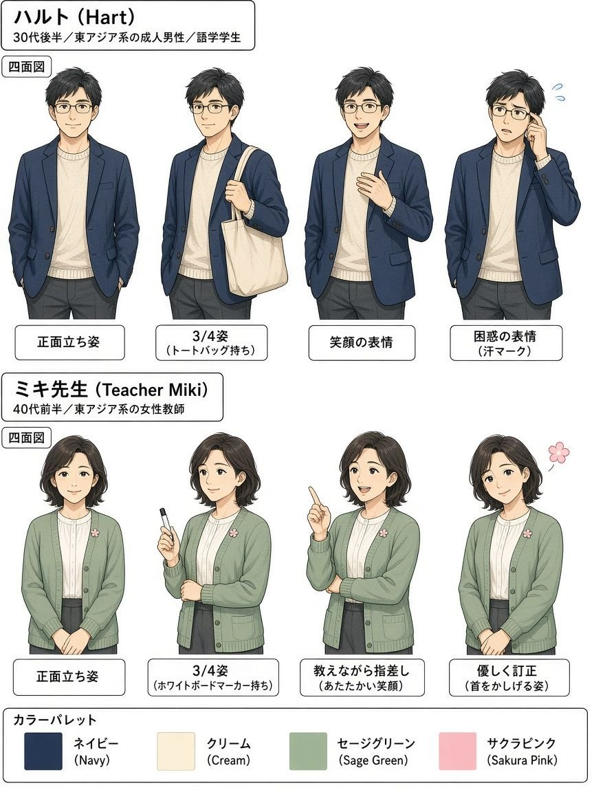
ハルト：東京・神樂坂附近的成人語言學校學生（晚 30 歲、眼鏡、海軍藍外套）。頁面上不使用任何真實姓名／肖像。
銀行員：通用櫃檯人員（無銀行品牌、無名牌真實姓名）。
ミキ先生：溫柔的語言學校老師（鼠尾草綠開襟衫、櫻花徽章）— 出現在總結頁。
畫風：日漫 clean ink、screentone、速度線、表情符號、日語氣泡＋中文對照。
圖上小錯誤備註： P02 車站小字標籤可能亂碼（東口／西口主字正確）； P03 整理券票面／顯示板小字可能亂碼； P08 中文曾出現「請跟房東放下」→ 正確為「請跟房東商量」；同頁銀行員性別前後不一致； P08／其他頁請一律以圖下日語列為準。 禁止拆金額規避的訊息以 P11／P12 為準。
12 頁目錄
P01 家賃を振り込みたい
家賃を振り込みたい
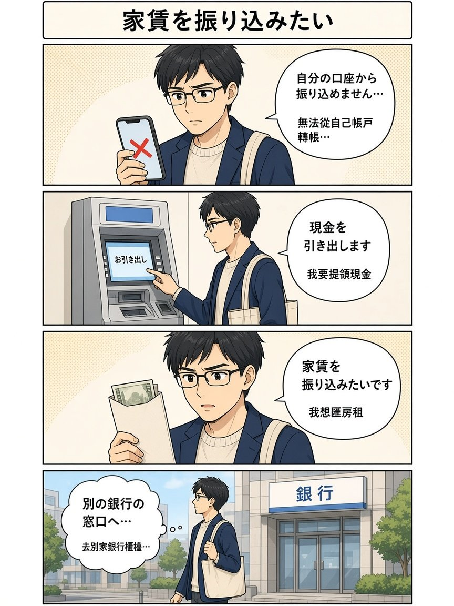
自分的 App／ATM 轉不了，提現金去別家銀行窗口。
P02 東口？西口？
東口？西口？
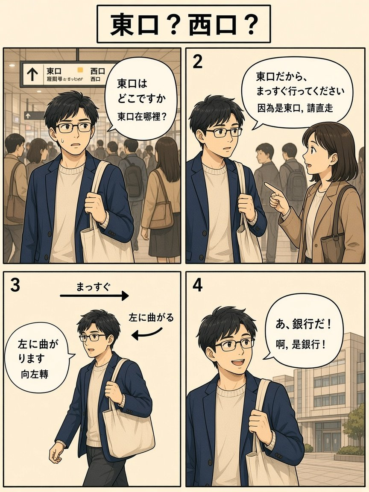
池袋找銀行時搞混東口西口。
P03 窓口で整理券
窓口で整理券
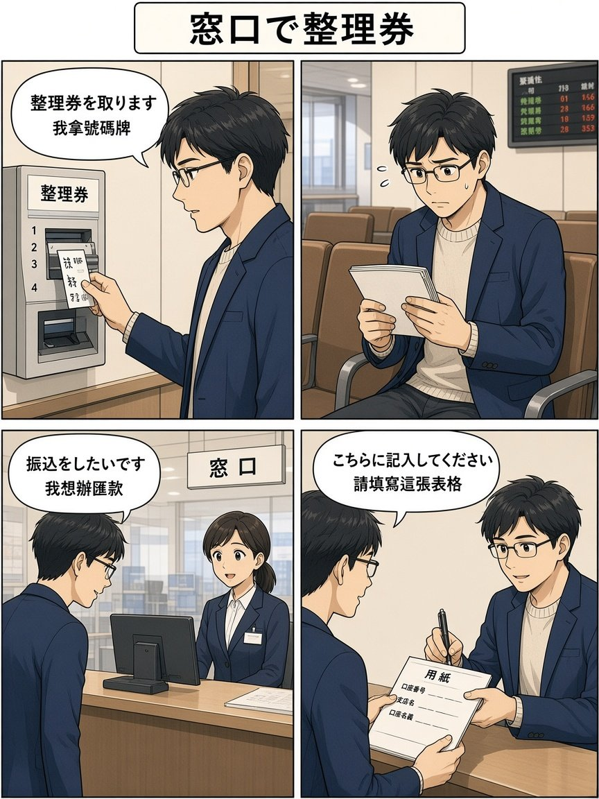
拿號碼牌、等候、跟櫃檯說要匯款、填表。
P04 銀行の言葉
銀行の言葉
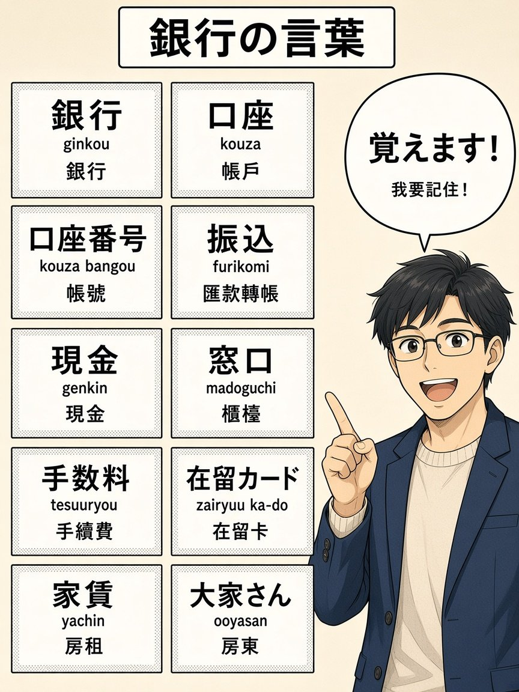
單字卡速記。
P05 どこに振り込みますか
どこに振り込みますか
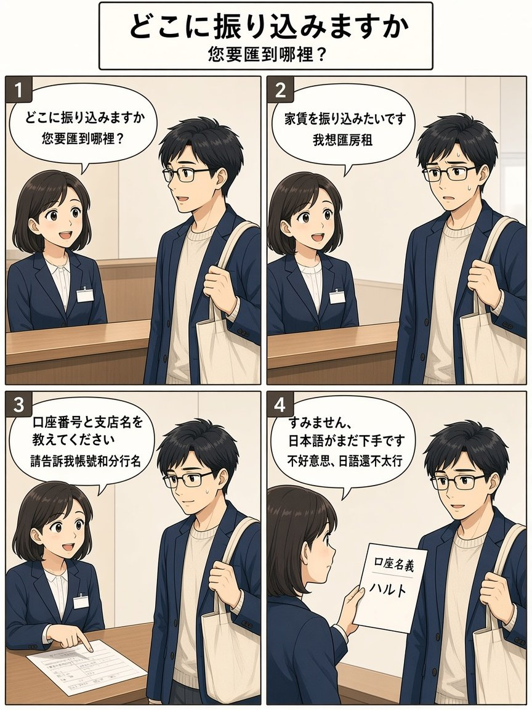
櫃檯問匯到哪裡；ハルト說明要匯房租。
P06 在留カードありますか
在留カードありますか
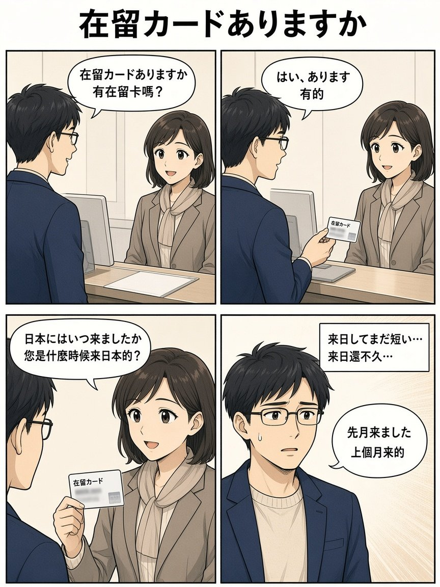
本人確認：在留卡與來日時間。
P07 振り込めません
振り込めません
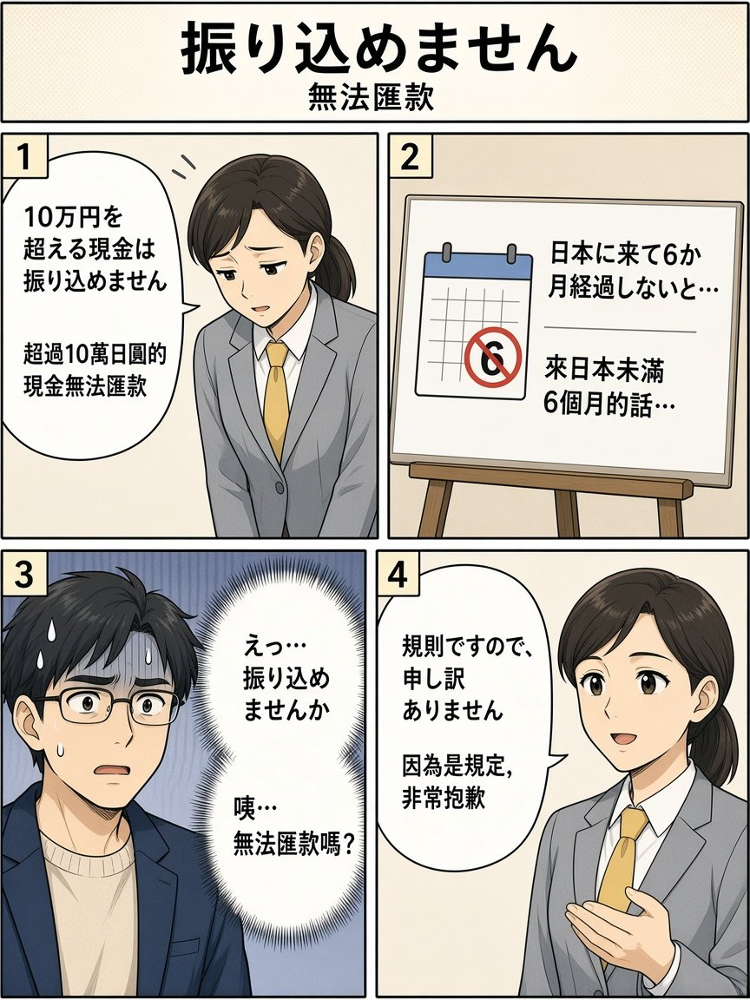
超過 10 萬現金無法匯；未滿 6 個月。
P08 大家さんに相談してください
大家さんに相談してください
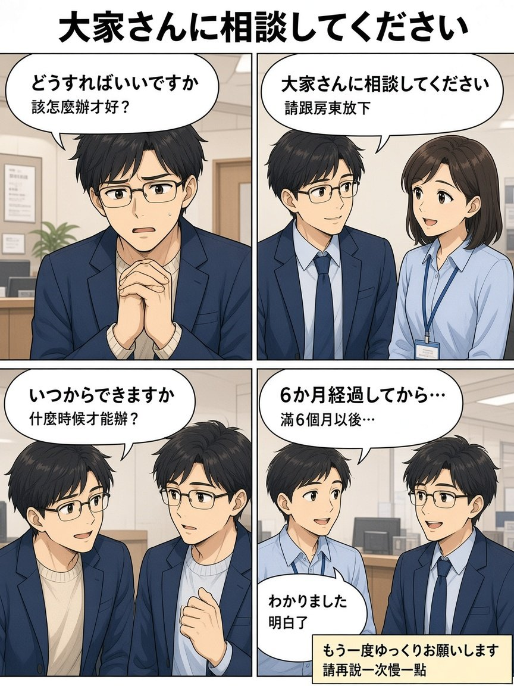
該怎麼辦？請跟房東商量；滿 6 個月以後。
P09 ATMと振込・振替
ATMと振込・振替
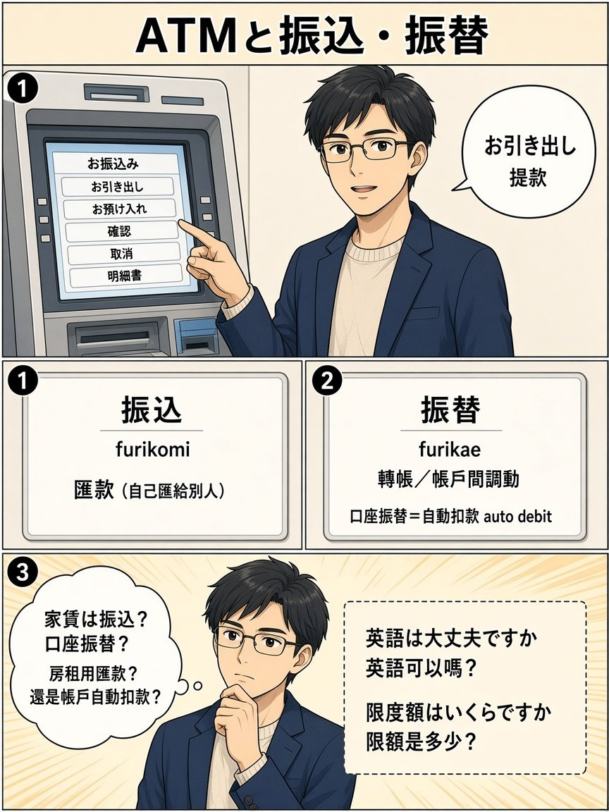
ATM 按鈕；振込＝匯給別人；口座振替＝自動扣款。
P10 文法メモ
文法メモ
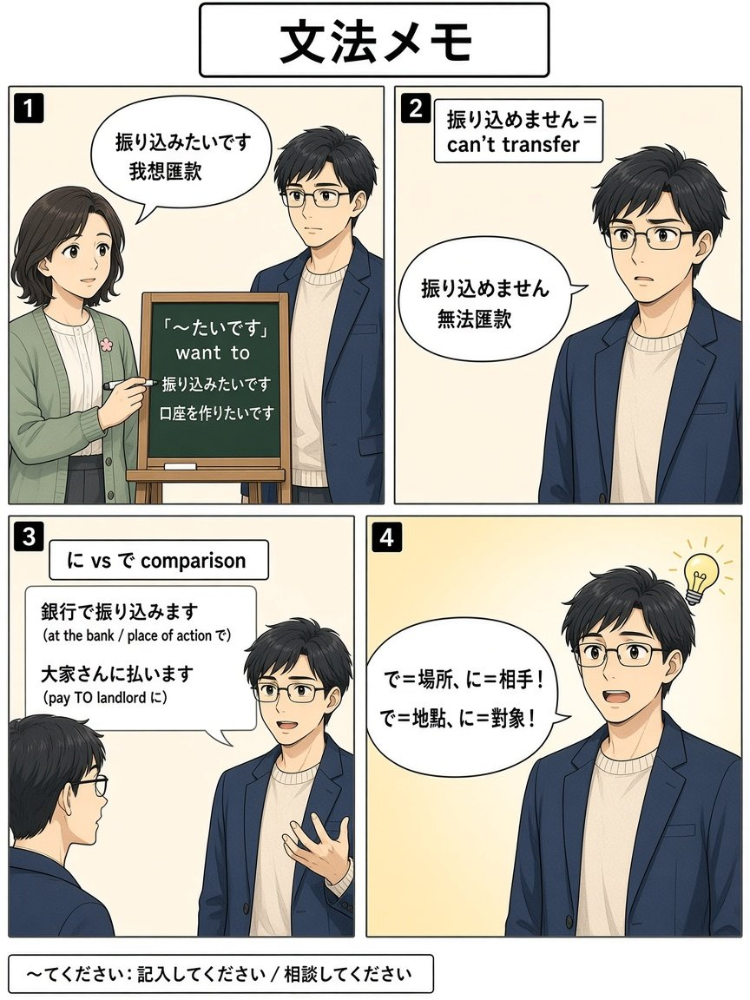
たいです／振り込めません／に vs で／てください。
P11 現金で払います
現金で払います
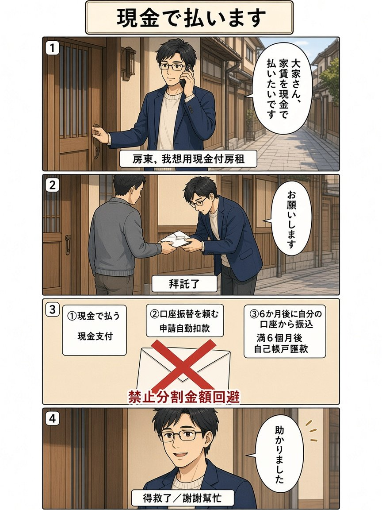
当面現金付房租；合法三選項；禁止拆金額。
P12 ミキ先生のまとめ
ミキ先生のまとめ
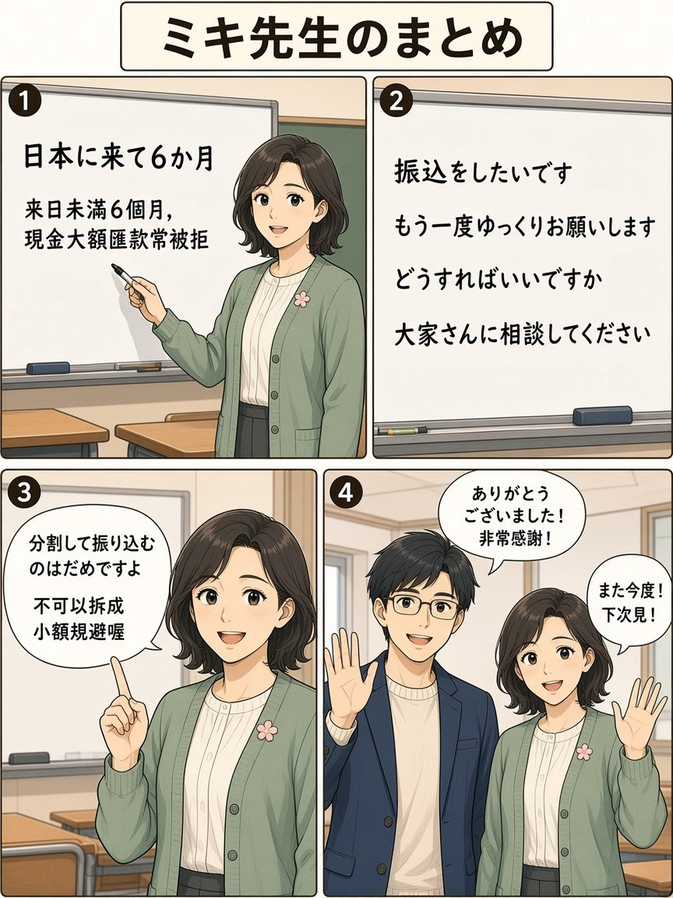
6 個月規則複習；不要拆金額；感謝收尾。